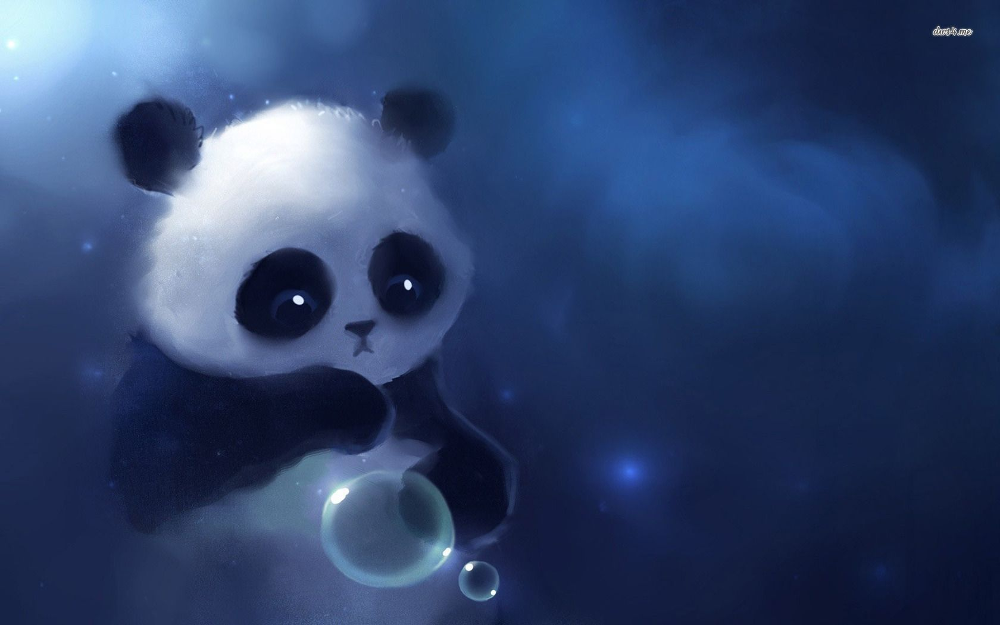

Simran Sahu

Summary
I am a hard-working and driven individual who isn't afraid to face a challenge.I know how to get a job done. Apart from this i would describe myself as a friendly and open minded person.
Education
Skills
- Creativity
- Communication
- Adaptability
- Positive attitude
- Willingness to learn
- Multi-tasker
Hobbies
Achievements
- Gold medal in skating
- 1st prizes in drawing and sketching
- 2nd prize in kho-kho
- Academic awards